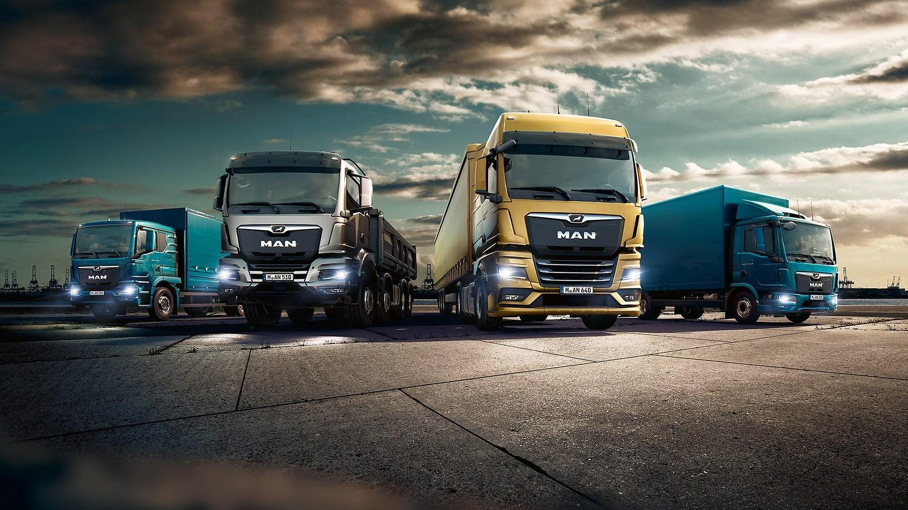
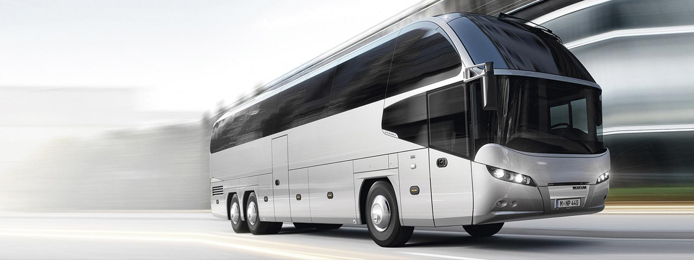

АВТОБУСИ MAN – ЗАПОРУКА ЯКОСТІ ТА КОМФОРТУ
Автобусний транспорт сімейства MAN особливо цінується на європейському ринку та з абсолютною впевненістю користується попитом серед водіїв завдяки своїй зразковій німецькій якості. Транспорт відрізняється тривалістю терміну експлуатації та безпекою для пасажирів. Автобус MAN будь-якої серії це, як правило, неповторний дизайн, ергономічність та надійність.
АВТОБУС MAN: ПЕРЕВАГИ
На комерційному ринку автобус MAN практично не має конкурентів. Автобуси MAN завжди на крок попереду своїх потенційних суперників. Кожна нова модель дивує наявністю сучасних інновацій, унікальними технологіями в галузі безпеки, екологічності та економії палива.
З погляду рентабельності техніки також є помітні плюси. Автобус MAN нового покоління оснащений модернізованими кондиціонерами, які, крім підвищеної ефективності, відрізняються невеликою вагою. Це впливає на збільшення продуктивності автомобіля та зменшення витрати палива.
Автобус MAN – універсальний транспортний засіб призначений для різного типу перевезень. У ньому пасажири почуватимуться у повній безпеці, як у тривалих поїздках, так і під час пересування в межах міста.
КУПИТИ АВТОБУС МАН У КИЄВІ
Продаж автобусів MAN в Україні йде повним ходом, тому що кожен розуміє, що транспорт цього виробництва це продукція класу люкс. Щоб купити автобус MAN в Україні на офіційній основі, не ризикуючи величезними фінансами, слід скористатися послугами офіційного дилера MAN в Україні – АВАНТІ Груп ТОВ.
Як офіційний дистриб’ютор MAN, наша компанія пропонує такі послуги:- продаж автобусів MAN: туристичних – MAN Lion’s Coach, міжнародних – MAN Lion’s Intercity, міських – MAN Lion’s City та мікроавтобусів MAN TGE;
- першокласне сервісне обслуговування на офіційній СТО МАН;
- продаж оригінальних запчастин від виробника;
- фінансування перспективних вітчизняних проектів;
- продаж транспорту із пробігом;
- професійна консультація щодо купівлі автобуса чи вантажного автомобіля, ремонту техніки МАН, сервісного та технічного обслуговування тощо.
ПРОПОНУЮТЬСЯ АВТОБУСИ MAN ВИГІДНО
Компанія «АВАНТІ Груп» пропонує всім охочим придбати автобуси MAN за вигідними розцінками. Ця марка автобусів цінується завдяки своїй безвідмовній роботі, довговічності та доступним розцінкам на проведення ремонту та обслуговування. Відмінними рисами представленої лінійки міського транспорту є надійність, ергономічність та продуманий дизайн. Ці автобуси маневрені, легко переміщаються містом, забезпечують безпечне транспортування пасажирів.
ПЕРЕВАГИ ТРАНСПОРТУ МАРКИ MAN
Пропоновані нашою компанією автобуси MAN славляться економічною витратою палива та екологічністю. Тому вони підходять для використання в будь-якому населеному пункті, а також можуть бути використані для міжміського повідомлення. Але на цьому їхні сильні сторони не закінчуються. Також є й інші переваги, які вигідно відрізняють автобуси MAN:
- виробництво здійснюється із використанням сучасних технологій;
- оснащення модернізованими кондиціонерами невеликої ваги, що збільшують продуктивність транспортного засобу, але скорочують витрати пального;
- простота здійснення ремонту та проведення обслуговування для підтримання нормальної роботи техніки протягом багатьох років;
- універсальність застосування, адже міські автобуси MAN використовуються для різних видів перевезень;
- безвідмовна робота, навіть за тривалих інтенсивних навантажень, стійкість до різних негативних впливів.
Автобус МАN є сучасним транспортом з продуманим комфортабельним салоном, де добре почуваються пасажири під час поїздки. Використовувати його можна для корпоративних цілей, організації бізнесу або вирішення інших завдань.
РОБІТЬ ПРАВИЛЬНИЙ ВИБІР – КУПУЙТЕ У НАС
Пропонує всім охочим якісні сучасні міські автобуси MAN за вигідною вартістю компанія АВАНТІ Груп ТОВ. Окрім самого транспорту, у нас можна отримати сервісне обслуговування, оригінальні запчастини від виробника, консультацію фахівців з питань ремонту та купівлі техніки.
КУПИТИ АВТОБУС MAN В КРЕДИТ
Купівля будь-якого транспорту передбачає чималі витрати, тим більше, якщо йдеться про компанії, що займаються перевезеннями. АВАНТІ Груп ТОВ пропонує замовникам кілька варіантів фінансування: кредит чи лізинг. Перш ніж зробити процедуру купівлі-продажу одним із перерахованих методів, клієнт повинен надати документи, що свідчать про його фінансове та юридичне становище.
Огляд модельного ряду вантажних автомобілів MAN
Огляд модельного ряду туристичних автобусів NEOPLAN

Офіційний сайт MAN-Україна